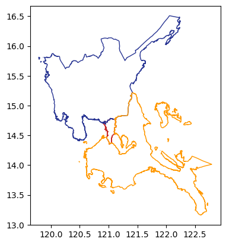
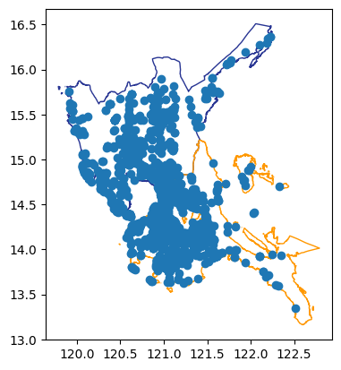
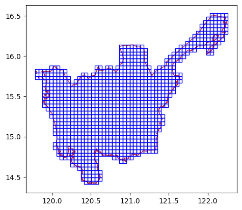
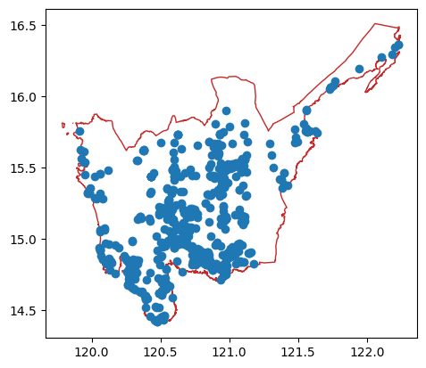
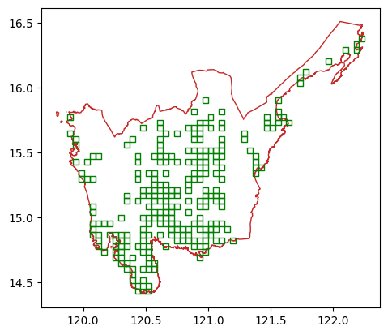
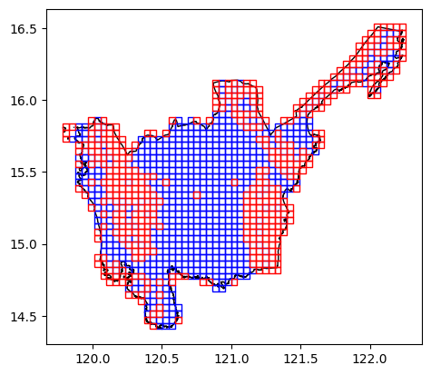
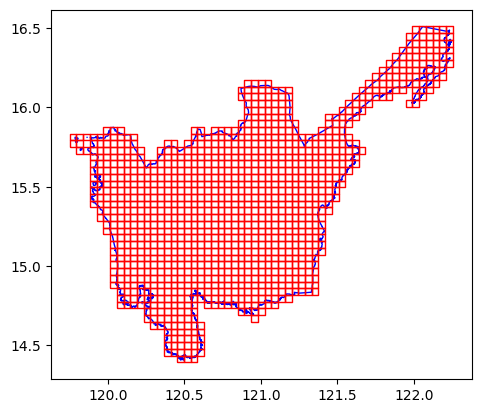
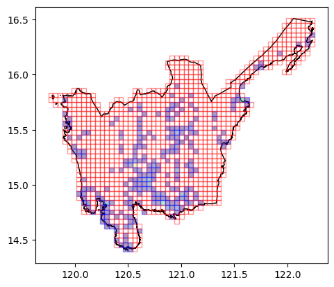
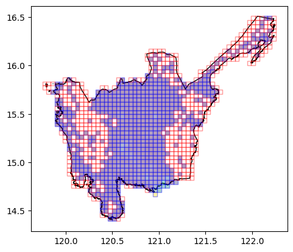

import geopandas as gpd
import matplotlib.pyplot as plt
import geowrangler.vector_zonal_stats as vzsVector Zonal Stats Tutorial
A basic introduction to vector zonal stats

Basic Usage
Generate zonal stats for a GeoDataframe containing areas of interest
Terms:
- aoi - (area of interest) a geodataframe which we are interested in generating zonal statistics for
- data - the source geodataframe containing the features which are interested in collecting zonal stats for our aoi.
Use case 1 - Count POIs (Points of Interest)
Example 1: Count POIs for Regions
- Input:
- aoi - region3,4,ncr regions (Admin Level 1) (Central Luzon) geometry (geom_type - polygon, multipolygon
- data - Philippine pois (geom_type - points)
- overlap_method = ‘intersects’
- aggregations:
- count - number of pois within aoi
- Output
- aoi with pois count (default output column:
index_count)
- aoi with pois count (default output column:
# area multipolygons for regions 3,4,ncr of the philippines
aoi = gpd.read_file("../data/region34ncr_admin.geojson")CPU times: user 1.42 s, sys: 97.1 ms, total: 1.52 s
Wall time: 1.54 sax = aoi.plot(
ax=plt.axes(),
facecolor="none",
edgecolor=[
"#C62828",
"#283593",
"#FF9800",
],
)
aoi| Reg_Code | Reg_Name | Reg_Alt_Name | geometry | |
|---|---|---|---|---|
| 0 | 130000000 | National Capital Region | NCR | MULTIPOLYGON (((121.03842 14.78525, 121.03815 ... |
| 1 | 030000000 | Region III | Central Luzon | MULTIPOLYGON (((120.11687 14.76309, 120.11684 ... |
| 2 | 040000000 | Region IV-A | Calabarzon | MULTIPOLYGON (((122.72165 13.36485, 122.72143 ... |
# raw pois from osm data (subset of region3,4, ncr only)
raw_data = gpd.read_file("../data/region34ncr_osm_pois.geojson")CPU times: user 29.7 ms, sys: 1.75 ms, total: 31.4 ms
Wall time: 32.6 msraw_data.columns.valuesarray(['osm_id', 'code', 'fclass', 'name', 'BARANGAY_CODE', 'geometry'],
dtype=object)raw_data.head()| osm_id | code | fclass | name | BARANGAY_CODE | geometry | |
|---|---|---|---|---|---|---|
| 0 | 311568428 | 2701 | tourist_info | Manila American Cemetery and Memorial Visitor ... | 137602022 | POINT (121.04852 14.54398) |
| 1 | 672565496 | 2701 | tourist_info | ecopark paging and first aid station | 137404141 | POINT (121.07479 14.71173) |
| 2 | 672565498 | 2701 | tourist_info | Ecopark ticket counter | 137404141 | POINT (121.07326 14.71291) |
| 3 | 1585389544 | 2701 | tourist_info | Area Formerly Occupied by Fort Bonifacio Museum | 137602021 | POINT (121.05837 14.55071) |
| 4 | 1834855424 | 2701 | tourist_info | Lotto Booth | 137601020 | POINT (120.99216 14.42312) |
ax = aoi.plot(
ax=plt.axes(),
facecolor="none",
edgecolor=[
"#C62828",
"#283593",
"#FF9800",
],
)
ax = raw_data.plot(ax=ax)
Compute POIs count per region
aoi = vzs.create_zonal_stats(
aoi,
raw_data,
overlap_method="intersects",
aggregations=[{"func": "count"}],
)CPU times: user 50.6 ms, sys: 7.81 ms, total: 58.4 ms
Wall time: 59.3 msNew aoi with pois count in the column index_count. (The column name can be overridden as shown in the next example)
aoiCPU times: user 1 µs, sys: 0 ns, total: 1 µs
Wall time: 2.86 µs| Reg_Code | Reg_Name | Reg_Alt_Name | geometry | index_count | |
|---|---|---|---|---|---|
| 0 | 130000000 | National Capital Region | NCR | MULTIPOLYGON (((121.03842 14.78525, 121.03815 ... | 880 |
| 1 | 030000000 | Region III | Central Luzon | MULTIPOLYGON (((120.11687 14.76309, 120.11684 ... | 701 |
| 2 | 040000000 | Region IV-A | Calabarzon | MULTIPOLYGON (((122.72165 13.36485, 122.72143 ... | 1253 |
Example 2: Count attractions for Regions
- Input:
- aoi - region3,4,ncr regions (Admin Level 1) (Central Luzon, NCR, Calabarzon) geometry (geom_type - polygon, multipolygon)
- data - attractions: filtered Philippine pois (Central Luzon, NCR, Calabarzon only) (geom_type - points) with
fclass== ‘attraction’ - overlap_method = ‘intersects’
- aggregations:
- count
- number of pois within aoi
- output column name
attractions
- count
- Output
- aoi with attractions count
Filter the raw data
# select only 'attraction' pois
attractions = raw_data[raw_data.fclass == "attraction"]attractions.head()| osm_id | code | fclass | name | BARANGAY_CODE | geometry | |
|---|---|---|---|---|---|---|
| 49 | 159473554 | 2721 | attraction | Chinatown Arch | 133902005 | POINT (120.97671 14.59672) |
| 50 | 622413978 | 2721 | attraction | Peace Bell | 137404020 | POINT (121.04934 14.65026) |
| 51 | 625180701 | 2721 | attraction | The Glass Garden | 137403027 | POINT (121.08194 14.61932) |
| 52 | 681222977 | 2721 | attraction | La Madre Filipina | 133908008 | POINT (120.97773 14.58172) |
| 53 | 820634039 | 2721 | attraction | Independence Flag Pole | 133908008 | POINT (120.97659 14.58155) |
Create zonal stats for filtered data. Add output key to specify output column name for count
aoi_attr = vzs.create_zonal_stats(
aoi, attractions, aggregations=[{"func": "count", "output": "attractions"}]
)CPU times: user 48 ms, sys: 6.33 ms, total: 54.4 ms
Wall time: 54.2 msaoi_attr| Reg_Code | Reg_Name | Reg_Alt_Name | geometry | attractions | |
|---|---|---|---|---|---|
| 0 | 130000000 | National Capital Region | NCR | MULTIPOLYGON (((121.03842 14.78525, 121.03815 ... | 136 |
| 1 | 030000000 | Region III | Central Luzon | MULTIPOLYGON (((120.11687 14.76309, 120.11684 ... | 205 |
| 2 | 040000000 | Region IV-A | Calabarzon | MULTIPOLYGON (((122.72165 13.36485, 122.72143 ... | 312 |
Example 3: Grid Tiles over POIs
- Input:
- aoi - gridded tiles for Region 3 (Central Luzon) at 15km x 15km size
- data - region 3 data filtered from philippine pois (geom_type - points)
- overlap_method = ‘intersects’
- aggregations:
- count
- number of pois within aoi
- output column name::
pois_count
- count
- Output
- aoi with pois count
# load gridded tiles
grid_aoi = gpd.read_file("../data/region3_admin_grids.geojson")CPU times: user 15.3 ms, sys: 808 µs, total: 16.1 ms
Wall time: 16.3 msax = aoi[aoi.Reg_Name == "Region III"].plot(
ax=plt.axes(), facecolor="none", edgecolor="#C62828"
)
ax = grid_aoi.plot(ax=ax, facecolor="none", edgecolor="blue")
region3_pois = gpd.read_file("../data/region3_osm_pois.geojson")CPU times: user 9.35 ms, sys: 467 µs, total: 9.81 ms
Wall time: 11 msregion3_pois.head()| osm_id | code | fclass | name | BARANGAY_CODE | geometry | |
|---|---|---|---|---|---|---|
| 0 | 560410986 | 2701 | tourist_info | Gawad Kalinga Office | 031420009 | POINT (121.08516 14.83601) |
| 1 | 1244301672 | 2701 | tourist_info | N 15deg 26' 11.1", E 120deg 25' 50.2", El... | 036918006 | POINT (120.43045 15.43663) |
| 2 | 1666684393 | 2701 | tourist_info | Eco Park Tourist Information & DENR Environmen... | 036918006 | POINT (120.44958 15.46446) |
| 3 | 1679992929 | 2701 | tourist_info | La Paz Tarlac - Zaragoza Nueva Ecija Boundary | 034932027 | POINT (120.75832 15.44284) |
| 4 | 1714645729 | 2701 | tourist_info | Lucy Pineda | 035409019 | POINT (120.61452 15.23359) |
len(region3_pois)701ax = aoi[aoi.Reg_Name == "Region III"].plot(
ax=plt.axes(), facecolor="none", edgecolor="#C62828"
)
ax = region3_pois.plot(ax=ax)
Compute pois count per grid
grid_aoi = vzs.create_zonal_stats(
grid_aoi,
region3_pois,
overlap_method="intersects",
aggregations=[{"func": "count", "output": "pois_count"}],
)CPU times: user 5.76 ms, sys: 860 µs, total: 6.62 ms
Wall time: 6.56 msgrid_aoi[grid_aoi.pois_count > 0].head()| x | y | geometry | pois_count | |
|---|---|---|---|---|
| 11 | 2 | 28 | POLYGON ((119.87566 15.6222, 119.92058 15.6222... | 1.0 |
| 14 | 2 | 31 | POLYGON ((119.87566 15.75193, 119.92058 15.751... | 1.0 |
| 18 | 3 | 23 | POLYGON ((119.92058 15.40581, 119.9655 15.4058... | 1.0 |
| 21 | 3 | 26 | POLYGON ((119.92058 15.53567, 119.9655 15.5356... | 4.0 |
| 22 | 3 | 27 | POLYGON ((119.92058 15.57894, 119.9655 15.5789... | 1.0 |
grid_aoi.pois_count.sum()np.float64(701.0)# show grids with at least 1 poi
ax = aoi[aoi.Reg_Name == "Region III"].plot(
ax=plt.axes(),
facecolor="none",
edgecolor=[
"#C62828",
],
)
ax = grid_aoi[grid_aoi.pois_count > 0].plot(ax=ax, facecolor="none", edgecolor="green")
Use case 2 - Stats on a metric column
Example 1 Regions over Population per Bgy Level
- Input:
- aoi - region3,4,ncr geometry (geom_type - polygon, multipolygon)
- data - region3,4, ncr population data (geom_type - pois)
- data_type: ‘individual_pois’
- overlap_method = ‘intersects’
- aggregations:
- metric_columns: ‘population’,‘men’, etc.
- each row in the data has a column: population, men, women, etc. with numeric value
- aggregation_functions - ‘min’,‘max’, ‘mean’, ‘sum’, etc.
- output_columns - ‘pop_min’, ‘pop_max’, for each column
- metric_columns: ‘population’,‘men’, etc.
- Output:
- aoi with new output columns pop_min, pop_max etc
Load 2020 Region 3, Region 4, and NCR Population Data at Barangay level (Admin Level 4)
Note
The population data came from the 2020 Facebook HRSL Dataset filtered for barangays covering Regions 3, Region 4, and NCR and converted the geometries from polygons to points by computing their centroids (projected to EPSG:3969). The land area was computed by projecting to EPSG:3123 and getting the geometry.area .
# load region3,4,ncr population data at barangay level
region34ncr_pop_data = gpd.read_file("../data/region34ncr_population_land.geojson")CPU times: user 115 ms, sys: 2.42 ms, total: 117 ms
Wall time: 121 msregion34ncr_pop_data.head()| BARANGAY_CODE | population | men | women | children_under_five | youth_15_24 | women_of_reproductive_age_15_49 | elderly_60_plus | land_area | geometry | |
|---|---|---|---|---|---|---|---|---|---|---|
| 0 | 31420020.0 | 1807 | 920 | 887 | 202 | 359 | 468 | 77 | 2.183518e+05 | POINT (121.05919 14.85825) |
| 1 | 34915006.0 | 3093 | 1594 | 1499 | 352 | 658 | 826 | 159 | 7.327482e+06 | POINT (120.9959 15.62242) |
| 2 | 35403009.0 | 4241 | 2158 | 2083 | 474 | 821 | 1112 | 256 | 8.740450e+05 | POINT (120.7773 15.1458) |
| 3 | 35409023.0 | 3373 | 1750 | 1623 | 296 | 611 | 895 | 244 | 6.484611e+05 | POINT (120.58052 15.22315) |
| 4 | 35413009.0 | 20884 | 10539 | 10344 | 2198 | 3893 | 5589 | 1260 | 2.015571e+06 | POINT (120.68523 15.09163) |
region34ncr_pop_data.columns.valuesarray(['BARANGAY_CODE', 'population', 'men', 'women',
'children_under_five', 'youth_15_24',
'women_of_reproductive_age_15_49', 'elderly_60_plus', 'land_area',
'geometry'], dtype=object)Compute zonal stats for regions 3,4,NCR * barangay count per region (bgy_count) * sum and mean for each population statistic (population, men, women, etc) * sum, mean, std, min, max for land area statistic
aoi = vzs.create_zonal_stats(
aoi,
region34ncr_pop_data,
aggregations=[
{"func": "count", "output": "bgy_count"},
{
"column": "population",
"func": ["sum", "mean"],
"output": ["pop_total", "pop_avg"],
},
{"column": "men", "func": ["sum", "mean"], "output": ["men_total", "men_avg"]},
{
"column": "women",
"func": ["sum", "mean"],
"output": ["women_total", "women_avg"],
},
{
"column": "children_under_five",
"func": ["sum", "mean"],
"output": ["under5_total", "under5_avg"],
},
{
"column": "youth_15_24",
"func": ["sum", "mean"],
"output": ["youth_total", "youth_avg"],
},
{
"column": "women_of_reproductive_age_15_49",
"func": ["sum", "mean"],
"output": ["women_repro_total", "women_repro_avg"],
},
{
"column": "elderly_60_plus",
"func": ["sum", "mean"],
"output": ["elderly_total", "elderly_avg"],
},
{
"column": "land_area",
"func": ["sum", "mean", "min", "max", "std"],
"output": ["land_total", "land_avg", "land_min", "land_max", "land_std"],
},
],
overlap_method="intersects",
)CPU times: user 60.5 ms, sys: 8.71 ms, total: 69.2 ms
Wall time: 71.2 msaoi.columns.valuesarray(['Reg_Code', 'Reg_Name', 'Reg_Alt_Name', 'geometry', 'bgy_count',
'pop_total', 'pop_avg', 'men_total', 'men_avg', 'women_total',
'women_avg', 'under5_total', 'under5_avg', 'youth_total',
'youth_avg', 'women_repro_total', 'women_repro_avg',
'elderly_total', 'elderly_avg', 'land_total', 'land_avg',
'land_min', 'land_max', 'land_std'], dtype=object)aoi.head()| Reg_Code | Reg_Name | Reg_Alt_Name | geometry | bgy_count | pop_total | pop_avg | men_total | men_avg | women_total | ... | youth_avg | women_repro_total | women_repro_avg | elderly_total | elderly_avg | land_total | land_avg | land_min | land_max | land_std | |
|---|---|---|---|---|---|---|---|---|---|---|---|---|---|---|---|---|---|---|---|---|---|
| 0 | 130000000 | National Capital Region | NCR | MULTIPOLYGON (((121.03842 14.78525, 121.03815 ... | 1707 | 12484535 | 7313.728764 | 6132828 | 3592.752197 | 6350844 | ... | 1468.077329 | 3699839 | 2167.451084 | 653306 | 382.721734 | 5.945955e+08 | 3.483277e+05 | 2890.947906 | 2.750653e+07 | 1.065422e+06 |
| 1 | 030000000 | Region III | Central Luzon | MULTIPOLYGON (((120.11687 14.76309, 120.11684 ... | 3099 | 10581859 | 3414.604389 | 5353309 | 1727.431107 | 5227035 | ... | 655.773475 | 2808810 | 906.360116 | 664150 | 214.311068 | 2.120885e+10 | 6.843771e+06 | 9589.467114 | 3.496501e+08 | 1.826504e+07 |
| 2 | 040000000 | Region IV-A | Calabarzon | MULTIPOLYGON (((122.72165 13.36485, 122.72143 ... | 4010 | 14081857 | 3511.685037 | 7035334 | 1754.447382 | 7044548 | ... | 671.226185 | 3857217 | 961.899501 | 780294 | 194.587032 | 1.551525e+10 | 3.869139e+06 | 3087.452331 | 4.310269e+08 | 1.119929e+07 |
3 rows × 24 columns
Example 2 : Grids over Population per Bgy Level
- Input:
- aoi - region3 grids geometry (geom_type - polygon)
- data - population data (geom_type - pois)
- data_type: ‘individual_pois’
- overlap_method = ‘intersects’
- aggregations:
- metric_columns: ‘population’,‘men’, ‘land_area’
- each row in the data has a column population, men, women, including land with numeric value
- aggregation_functions - ‘min’,‘max’, ‘mean’, ‘sum’, etc.
- output_columns - ‘pop_min’, ‘pop_max’, for each
- metric_columns: ‘population’,‘men’, ‘land_area’
- Output:
- aoi with new columns pop_min, pop_max etc.
Load population and land POIs (Bgy level)
Note
The dataset is similar to the previous one (Region 3, Region 4, and NCR) except that it has been filtered only data for the Region 3.
region3_pop_pois = gpd.read_file("../data/region3_population_pois.geojson")CPU times: user 46.6 ms, sys: 1.15 ms, total: 47.7 ms
Wall time: 48.7 msregion3_pop_pois.head()| BARANGAY_CODE | population | men | women | children_under_five | youth_15_24 | women_of_reproductive_age_15_49 | elderly_60_plus | land_area | Reg_Name | geometry | |
|---|---|---|---|---|---|---|---|---|---|---|---|
| 0 | 31420020.0 | 1807 | 920 | 887 | 202 | 359 | 468 | 77 | 2.183518e+05 | Region III | POINT (121.05919 14.85825) |
| 1 | 34915006.0 | 3093 | 1594 | 1499 | 352 | 658 | 826 | 159 | 7.327482e+06 | Region III | POINT (120.9959 15.62242) |
| 2 | 35403009.0 | 4241 | 2158 | 2083 | 474 | 821 | 1112 | 256 | 8.740450e+05 | Region III | POINT (120.7773 15.1458) |
| 3 | 35409023.0 | 3373 | 1750 | 1623 | 296 | 611 | 895 | 244 | 6.484611e+05 | Region III | POINT (120.58052 15.22315) |
| 4 | 35413009.0 | 20884 | 10539 | 10344 | 2198 | 3893 | 5589 | 1260 | 2.015571e+06 | Region III | POINT (120.68523 15.09163) |
region3_pop_pois.columns.valuesarray(['BARANGAY_CODE', 'population', 'men', 'women',
'children_under_five', 'youth_15_24',
'women_of_reproductive_age_15_49', 'elderly_60_plus', 'land_area',
'Reg_Name', 'geometry'], dtype=object)Create zonal stats (same as previous example, but now for a more granular level for region 3 only)
grid_aoi = vzs.create_zonal_stats(
grid_aoi,
region3_pop_pois,
aggregations=[
{"func": "count", "output": "bgy_count"},
{
"column": "population",
"func": ["sum", "mean"],
"output": ["pop_total", "pop_avg"],
},
{"column": "men", "func": ["sum", "mean"], "output": ["men_total", "men_avg"]},
{
"column": "women",
"func": ["sum", "mean"],
"output": ["women_total", "women_avg"],
},
{
"column": "children_under_five",
"func": ["sum", "mean"],
"output": ["under5_total", "under5_avg"],
},
{
"column": "youth_15_24",
"func": ["sum", "mean"],
"output": ["youth_total", "youth_avg"],
},
{
"column": "women_of_reproductive_age_15_49",
"func": ["sum", "mean"],
"output": ["women_repro_total", "women_repro_avg"],
},
{
"column": "elderly_60_plus",
"func": ["sum", "mean"],
"output": ["elderly_total", "elderly_avg"],
},
{
"column": "land_area",
"func": ["sum", "mean", "min", "max", "std"],
"output": ["land_total", "land_avg", "land_min", "land_max", "land_std"],
},
],
overlap_method="intersects",
)CPU times: user 9.92 ms, sys: 1.11 ms, total: 11 ms
Wall time: 10.8 msgrid_aoi.head()| x | y | geometry | pois_count | bgy_count | pop_total | pop_avg | men_total | men_avg | women_total | ... | youth_avg | women_repro_total | women_repro_avg | elderly_total | elderly_avg | land_total | land_avg | land_min | land_max | land_std | |
|---|---|---|---|---|---|---|---|---|---|---|---|---|---|---|---|---|---|---|---|---|---|
| 0 | 0 | 30 | POLYGON ((119.78583 15.7087, 119.83075 15.7087... | NaN | NaN | NaN | NaN | NaN | NaN | NaN | ... | NaN | NaN | NaN | NaN | NaN | NaN | NaN | NaN | NaN | NaN |
| 1 | 0 | 31 | POLYGON ((119.78583 15.75193, 119.83075 15.751... | NaN | NaN | NaN | NaN | NaN | NaN | NaN | ... | NaN | NaN | NaN | NaN | NaN | NaN | NaN | NaN | NaN | NaN |
| 2 | 0 | 32 | POLYGON ((119.78583 15.79516, 119.83075 15.795... | NaN | NaN | NaN | NaN | NaN | NaN | NaN | ... | NaN | NaN | NaN | NaN | NaN | NaN | NaN | NaN | NaN | NaN |
| 3 | 1 | 30 | POLYGON ((119.83075 15.7087, 119.87566 15.7087... | NaN | 1.0 | 3415.0 | 3415.0 | 1744.0 | 1744.0 | 1670.0 | ... | 648.0 | 848.0 | 848.0 | 229.0 | 229.0 | 5.552401e+06 | 5.552401e+06 | 5.552401e+06 | 5.552401e+06 | NaN |
| 4 | 1 | 32 | POLYGON ((119.83075 15.79516, 119.87566 15.795... | NaN | NaN | NaN | NaN | NaN | NaN | NaN | ... | NaN | NaN | NaN | NaN | NaN | NaN | NaN | NaN | NaN | NaN |
5 rows × 24 columns
Show grids with bgy_count > 0 and bgy_count == 0
ax = aoi[aoi.Reg_Name == "Region III"].plot(
ax=plt.axes(), facecolor="none", edgecolor="black"
)
ax = grid_aoi[grid_aoi.bgy_count.notna()].plot(
ax=ax, facecolor="none", edgecolor="blue"
)
ax = grid_aoi[grid_aoi.bgy_count.isna()].plot(ax=ax, facecolor="none", edgecolor="red")
Generating Bing Tile Grid Zonal Stats
If our areas of interest use Bing Tile Grids (with the associated quadkeys),
we can use a much faster way of generating zonal stats by pre-computing the quadkeys for our data.
Note
You can use the geowrangler.grids modules BingTileGridGenerator to convert your AOI into a Bing Tile Grid AOI.
Example 1: Count POIs for Region 3 Bing Tile Grid AOI
- Input:
- aoi bing tile grids zoom level 13 - region3 (Admin Level 1) (Central Luzon) geometry (geom_type - polygon, multipolygon)
- data - Region 3 pois (geom_type - points)
- aggregations:
- count - number of pois within aoi
- Output
- aoi with pois count (default output column:
index_count)
- aoi with pois count (default output column:
Load our bing tile grid aoi
# load region3_admin area in bing tile grid ('ADM level 1 - Philippines, region 3, zoom level13')
region3_bingtile_grid = gpd.read_file("../data/region3_bingtile_grid13.geojson")region3_bingtile_grid.head()| quadkey | geometry | |
|---|---|---|
| 0 | 1323030303301 | POLYGON ((120.10254 14.73239, 120.10254 14.774... |
| 1 | 1323030303300 | POLYGON ((120.05859 14.73239, 120.05859 14.774... |
| 2 | 1323030303311 | POLYGON ((120.19043 14.73239, 120.19043 14.774... |
| 3 | 1323030303133 | POLYGON ((120.19043 14.77488, 120.19043 14.817... |
| 4 | 1323030303131 | POLYGON ((120.19043 14.81737, 120.19043 14.859... |
ax = plt.axes()
ax = aoi[aoi.Reg_Name == "Region III"].plot(ax=ax, facecolor="none", edgecolor="blue")
ax = region3_bingtile_grid.plot(ax=ax, facecolor="none", edgecolor="red")
Lets compute the quadkeys for our Region3 pois
DATA_ZOOM_LEVEL = 23 # for pois, it can be as high as 24region3_pois_quadkeys = vzs.compute_quadkey(region3_pois, DATA_ZOOM_LEVEL)CPU times: user 19.4 ms, sys: 861 µs, total: 20.2 ms
Wall time: 20.4 msregion3_pois_quadkeys.head()| osm_id | code | fclass | name | BARANGAY_CODE | geometry | quadkey | |
|---|---|---|---|---|---|---|---|
| 0 | 560410986 | 2701 | tourist_info | Gawad Kalinga Office | 031420009 | POINT (121.08516 14.83601) | 13230312020312101332220 |
| 1 | 1244301672 | 2701 | tourist_info | N 15deg 26' 11.1", E 120deg 25' 50.2", El... | 036918006 | POINT (120.43045 15.43663) | 13230301323000331033200 |
| 2 | 1666684393 | 2701 | tourist_info | Eco Park Tourist Information & DENR Environmen... | 036918006 | POINT (120.44958 15.46446) | 13230301321223132232132 |
| 3 | 1679992929 | 2701 | tourist_info | La Paz Tarlac - Zaragoza Nueva Ecija Boundary | 034932027 | POINT (120.75832 15.44284) | 13230301332111310110220 |
| 4 | 1714645729 | 2701 | tourist_info | Lucy Pineda | 035409019 | POINT (120.61452 15.23359) | 13230303110021032011230 |
Lets compute the zonal stats for each grid as the pois_count. > Notice the computation time is pretty fast
region3_bingtile_pois = vzs.create_bingtile_zonal_stats(
region3_bingtile_grid,
region3_pois_quadkeys,
aggregations=[dict(func="count", output="pois_count", fillna=True)],
)CPU times: user 6.03 ms, sys: 817 µs, total: 6.85 ms
Wall time: 6.36 msregion3_bingtile_pois[region3_bingtile_pois.pois_count > 0].head()| quadkey | geometry | pois_count | |
|---|---|---|---|
| 5 | 1323030312020 | POLYGON ((120.23438 14.81737, 120.23438 14.859... | 8.0 |
| 8 | 1323030121200 | POLYGON ((119.88281 15.74996, 119.88281 15.792... | 1.0 |
| 11 | 1323030121222 | POLYGON ((119.88281 15.62304, 119.88281 15.665... | 1.0 |
| 13 | 1323030123002 | POLYGON ((119.88281 15.53838, 119.88281 15.580... | 1.0 |
| 22 | 1323030123001 | POLYGON ((119.92676 15.58071, 119.92676 15.623... | 1.0 |
ax = aoi[aoi.Reg_Name == "Region III"].plot(
ax=plt.axes(), facecolor="none", edgecolor="black"
)
ax = region3_bingtile_pois[region3_bingtile_pois.pois_count > 0].plot(
column="pois_count", ax=ax, edgecolor="blue", alpha=0.4
)
ax = region3_bingtile_pois[region3_bingtile_pois.pois_count == 0].plot(
ax=ax, facecolor="none", edgecolor="red", alpha=0.4
)
Example 2: Population stats for Region 3 Bing Tile Grid AOI
- Input:
- aoi bing tile grids zoom level 13 - region3 (Admin Level 1) (Central Luzon) geometry (geom_type - polygon, multipolygon)
- data - Region 3 pop data (geom_type - points)
- aggregations:
- pop totals, avg, men total and avg, etc , barangay counts, etc.
- Output
- aoi bing tile grids zoom level 13 with additional stats
We can also reuse the region34ncr population data to add more zonal statistics to our region3 bingtile pois
# Add quadkeys to region34ncr population data
region34ncr_pop_data = vzs.compute_quadkey(
region34ncr_pop_data, DATA_ZOOM_LEVEL
)CPU times: user 180 ms, sys: 775 µs, total: 180 ms
Wall time: 180 msregion34ncr_pop_data.head()| BARANGAY_CODE | population | men | women | children_under_five | youth_15_24 | women_of_reproductive_age_15_49 | elderly_60_plus | land_area | geometry | quadkey | |
|---|---|---|---|---|---|---|---|---|---|---|---|
| 0 | 31420020.0 | 1807 | 920 | 887 | 202 | 359 | 468 | 77 | 2.183518e+05 | POINT (121.05919 14.85825) | 13230312020301100210231 |
| 1 | 34915006.0 | 3093 | 1594 | 1499 | 352 | 658 | 826 | 159 | 7.327482e+06 | POINT (120.9959 15.62242) | 13230310220010101012220 |
| 2 | 35403009.0 | 4241 | 2158 | 2083 | 474 | 821 | 1112 | 256 | 8.740450e+05 | POINT (120.7773 15.1458) | 13230303111220301103213 |
| 3 | 35409023.0 | 3373 | 1750 | 1623 | 296 | 611 | 895 | 244 | 6.484611e+05 | POINT (120.58052 15.22315) | 13230303101131332000021 |
| 4 | 35413009.0 | 20884 | 10539 | 10344 | 2198 | 3893 | 5589 | 1260 | 2.015571e+06 | POINT (120.68523 15.09163) | 13230303112102100203003 |
region3_bingtile_pois_pop_data = vzs.create_bingtile_zonal_stats(
region3_bingtile_pois, # reuse from previous example
region34ncr_pop_data, # updated with quadkeys
aggregations=[
{"func": "count", "output": "bgy_count"},
{
"column": "population",
"func": ["sum", "mean"],
"output": ["pop_total", "pop_avg"],
},
{"column": "men", "func": ["sum", "mean"], "output": ["men_total", "men_avg"]},
{
"column": "women",
"func": ["sum", "mean"],
"output": ["women_total", "women_avg"],
},
{
"column": "children_under_five",
"func": ["sum", "mean"],
"output": ["under5_total", "under5_avg"],
},
{
"column": "youth_15_24",
"func": ["sum", "mean"],
"output": ["youth_total", "youth_avg"],
},
{
"column": "women_of_reproductive_age_15_49",
"func": ["sum", "mean"],
"output": ["women_repro_total", "women_repro_avg"],
},
{
"column": "elderly_60_plus",
"func": ["sum", "mean"],
"output": ["elderly_total", "elderly_avg"],
},
{
"column": "land_area",
"func": ["sum", "mean", "min", "max", "std"],
"output": ["land_total", "land_avg", "land_min", "land_max", "land_std"],
},
],
)CPU times: user 12.1 ms, sys: 672 µs, total: 12.8 ms
Wall time: 12.2 msregion3_bingtile_pois_pop_data[region3_bingtile_pois_pop_data.bgy_count.notna()].head()| quadkey | geometry | pois_count | bgy_count | pop_total | pop_avg | men_total | men_avg | women_total | women_avg | ... | youth_avg | women_repro_total | women_repro_avg | elderly_total | elderly_avg | land_total | land_avg | land_min | land_max | land_std | |
|---|---|---|---|---|---|---|---|---|---|---|---|---|---|---|---|---|---|---|---|---|---|
| 5 | 1323030312020 | POLYGON ((120.23438 14.81737, 120.23438 14.859... | 8.0 | 5.0 | 40890.0 | 8178.000000 | 20398.0 | 4079.600000 | 20490.0 | 4098.000000 | ... | 1662.000000 | 11493.0 | 2298.600000 | 2337.0 | 467.4 | 4.156777e+06 | 8.313554e+05 | 1.319242e+05 | 2.503691e+06 | 9.727404e+05 |
| 6 | 1323030120313 | POLYGON ((119.83887 15.70766, 119.83887 15.749... | 0.0 | 1.0 | 3415.0 | 3415.000000 | 1744.0 | 1744.000000 | 1670.0 | 1670.000000 | ... | 648.000000 | 848.0 | 848.000000 | 229.0 | 229.0 | 5.552401e+06 | 5.552401e+06 | 5.552401e+06 | 5.552401e+06 | NaN |
| 7 | 1323030121022 | POLYGON ((119.88281 15.79225, 119.88281 15.834... | 0.0 | 1.0 | 4742.0 | 4742.000000 | 2438.0 | 2438.000000 | 2304.0 | 2304.000000 | ... | 828.000000 | 1114.0 | 1114.000000 | 370.0 | 370.0 | 5.485826e+06 | 5.485826e+06 | 5.485826e+06 | 5.485826e+06 | NaN |
| 8 | 1323030121200 | POLYGON ((119.88281 15.74996, 119.88281 15.792... | 1.0 | 7.0 | 21755.0 | 3107.857143 | 11047.0 | 1578.142857 | 10707.0 | 1529.571429 | ... | 587.857143 | 5364.0 | 766.285714 | 1631.0 | 233.0 | 1.343751e+07 | 1.919645e+06 | 5.222719e+05 | 4.416378e+06 | 1.395113e+06 |
| 9 | 1323030121202 | POLYGON ((119.88281 15.70766, 119.88281 15.749... | 0.0 | 5.0 | 10146.0 | 2029.200000 | 5257.0 | 1051.400000 | 4887.0 | 977.400000 | ... | 376.600000 | 2393.0 | 478.600000 | 668.0 | 133.6 | 1.836666e+07 | 3.673332e+06 | 2.364678e+06 | 5.247429e+06 | 1.068957e+06 |
5 rows × 23 columns
ax = aoi[aoi.Reg_Name == "Region III"].plot(
ax=plt.axes(), facecolor="none", edgecolor="black"
)
ax = region3_bingtile_pois_pop_data[
region3_bingtile_pois_pop_data.bgy_count.notna()
].plot(column="pop_total", ax=ax, edgecolor="blue", alpha=0.4)
ax = region3_bingtile_pois_pop_data[
region3_bingtile_pois_pop_data.bgy_count.isna()
].plot(ax=ax, facecolor="none", edgecolor="red", alpha=0.4)